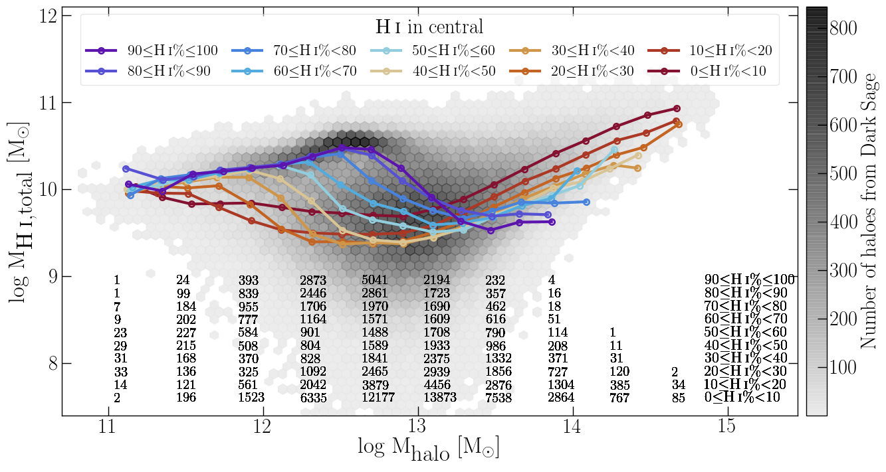
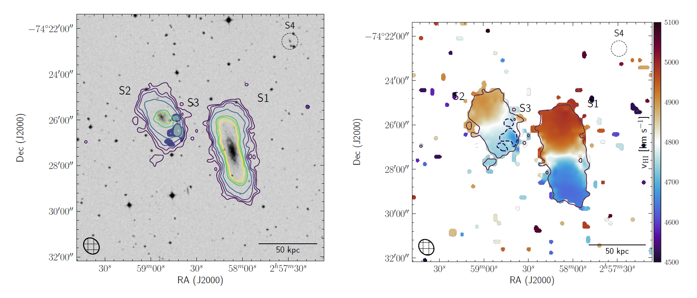
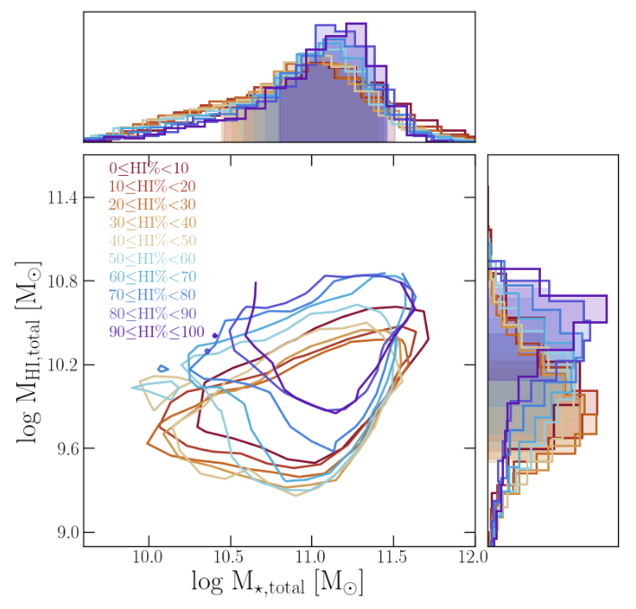
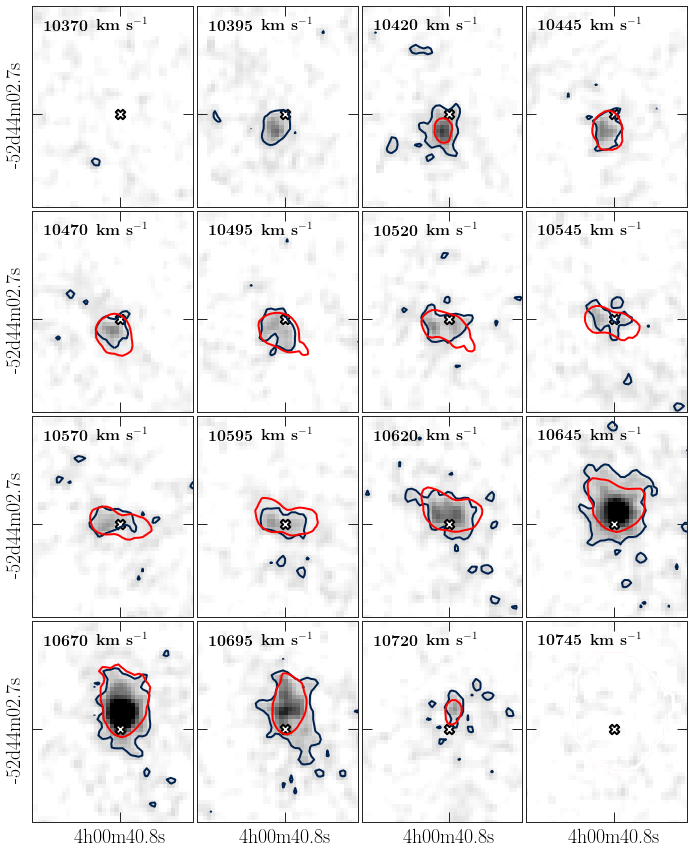

- Throughout PhD I spent a lot of time creating visualizations of the scientific data using Python, some are presented in Research and here are some others:
HI in simulated central galaxies
Figure below: The solid lines show the running median. The colour (red--yellow--purple) of the median lines show samples of central galaxies. The numbers at the bottom show the number of centrals in each bin for each median line as indicated in the right bottom corner. The hexagons in the background show the 2D density distribution of haloes. Obtained using Dark Sage semi-analytic model and MultiDark simulation.

HI intensity distribution and HI velocity field
Figure below: The HI emission in the HIPASSJ0258-74 group. The HI emission is shown by the contours overlaid on the optical DSS B-band image. The lowest shown HI column density 3x1019 cm-2.The other HI column density contours are: 8, 16, 32 and 64, 75 and 90x1019 cm-2. The S3 galaxy is shown as shaded contours (between 3 and 6x1019 cm-2) to enhance its visibility. The S4 galaxy is not detected in HI. Right: The velocity field of the J0258-74 group in the limit from 4500 to 5100 km s-1. The group members are marked (S1-S4) as well as the lowest HI column density (3x1019 cm-2). The dashed line show the position of the S3 galaxy to enhance its visibility. The synthesized beam is shown in the bottom left corner, and the scale bar in the bottom right corner shows 50 kpc at the group distance (Dzudzar et al. submitted).

1σ of the distribution of haloes based on the H i that is within the central galaxy
Figure below: Total halo HI mass versus total halo stellar mass for Dark Sage haloes with occupancy N≥3 and their 1σ distributions based on the amount of the HI in central galaxy. Each solid line shows 1σ distribution of a sample of haloes with the central galaxy containing from 0 to 100%, in steps of ∼10%, of the total HI mass.

Channel map of ESO156-G029
Figure below: Channel map of ESO156-G029 in steps of 25 km s−1. The blue and red contours show HI emission (from observed and modelled galaxy). The white cross shows the stellar centre of ESO156-G029 galaxy.
